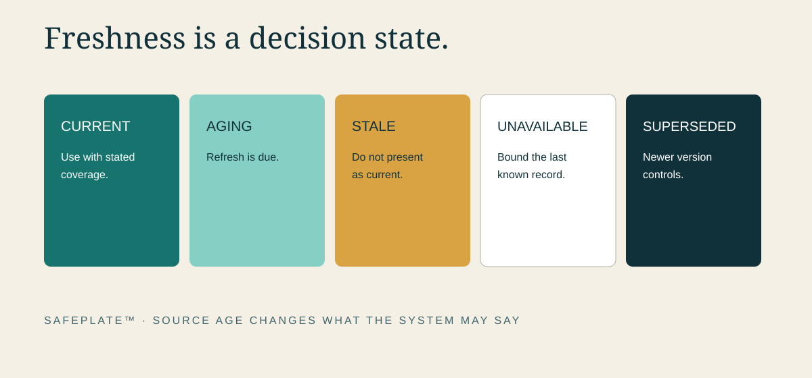
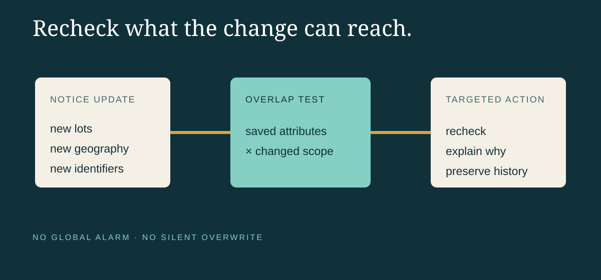

A Correct Match Can Expire
SAFEPLATE™ by Function Media LLC | Freshness Window Edition
At 9:12 on Monday morning, a product check returns a clean result. The brand, package size and visible lot code do not match the recall notice available at that moment. The household keeps the item. The kitchen moves on.
By Tuesday afternoon, the recalling firm has expanded the affected lots. A state notice adds distribution information. A photograph clarifies where the code is printed. The same product, checked against the newer record, now requires another look.
Nothing about the physical package changed. The evidence around it did.
That is an uncomfortable truth for food-safety technology: a correct match can expire.
Search systems are often designed as though a result were permanent. A user enters a product, receives “match” or “no match,” and treats the answer as a settled property of the item. In reality, recall and outbreak information changes across time. Notices are updated. Product lists expand. distribution details become clearer. Agencies correct links, add images or distinguish a public-health alert from a recall.
A responsible system must preserve not only what it concluded, but when, from which sources and under what evidence boundary.
The answer has an observation time
Food-safety information is not a static encyclopedia. It is a sequence of public observations.
When SAFEPLATE compares a product with an official notice, the comparison should carry an observation time: the moment the source was retrieved and evaluated. That timestamp does not imply that the agency created the information at the same moment. It tells the user which public record the system actually saw.
Several clocks may matter:
- the event or production date;
- the agency publication date;
- the source’s update date;
- the system retrieval time;
- the user’s product-check time; and
- the last human review.
Collapsing those clocks into one “date” makes the interface simpler and the evidence weaker.

Freshness is not the same as accuracy
A record can be accurately copied and still be too old for the decision in front of it.
Imagine that a cached notice is word-for-word correct, but a revised official notice now includes three additional lots. The cached record is accurate as a historical artifact. It is not current enough to support a present-tense safety conclusion.
Freshness therefore needs its own status. A useful system should distinguish among:
Current — the authoritative source was retrieved within the expected checking window.
Aging — the record remains usable for context, but a new source check is due.
Stale — the system cannot responsibly present the record as current.
Source unavailable — the authoritative endpoint could not be reached, so the last known record must be clearly bounded.
Superseded — a newer version exists and should control current comparison.
These labels are operational states, not visual decorations. They determine whether a user sees a current answer, a caution, a request to retry or an escalation for review.
A no-match result needs an expiration condition
Positive matches naturally attract attention. Negative results require more discipline.
“No match” can mean that the available identifiers fall outside the stated recall scope. It can also mean that the decisive code was unreadable, the product photograph was incomplete, the source was unavailable or the notice had not yet been expanded.
SAFEPLATE should therefore avoid presenting “not recalled” when the evidence supports only “no match found under the current notice and available identifiers.” The second phrase is less comforting, but more accurate.
A negative result should record:
- which official notices were checked;
- which product attributes were compared;
- which decisive attributes were missing;
- when the comparison occurred;
- the freshness state of each source; and
- what event should trigger re-evaluation.
That trigger might be a source update, an expanded product list, a newly entered lot code, a corrected identifier or the end of a defined refresh window.
The source changed is itself an event
Most interfaces overwrite the old record with the new one. That keeps the screen tidy but destroys part of the story.
If a notice expands from two lots to five, the system should preserve the earlier scope, the later scope and the time the change was detected. If a distribution statement changes from regional to national, that change belongs in the evidence history. If a product image is added after publication, the system should record that the visual comparison became possible only then.
Version history does not need to overwhelm the consumer. A household may see a concise statement: “This notice changed since your last check. Compare your lot code again.” An authorized analyst can see the detailed source snapshots and differences.
The principle is the same at both levels: never pretend the current record was always known.
Cold-chain time and information time are different
The data logger in this campaign’s image is a metaphor, not a SAFEPLATE hardware product. It makes an important distinction visible.
Temperature history describes conditions around a physical product. Information freshness describes conditions around the evidence used to evaluate it. Both involve time, but one cannot substitute for the other.
A package may have perfect cold-chain records and still fall within an allergen recall. A recall notice may be current while the package’s decisive lot code remains unreadable. Responsible product review keeps these evidence types separate, then shows how they affect the decision together.
The refresh interval needs a reason
“Real time” is often used as a marketing phrase when the actual system checks on a schedule. A responsible platform should disclose its cadence and the limitations around it.
Different sources support different access methods and publication patterns. Some expose structured feeds. Others publish web pages, PDFs or tables. Some change frequently; others only when an agency posts a formal update. The appropriate checking interval should reflect source behavior, operational importance, rate limits and failure handling.
SAFEPLATE’s design direction is to monitor designated authoritative sources on defined schedules, preserve retrieval outcomes and identify when a source has not refreshed as expected. That is more useful than a glowing “live” label with no evidence behind it.

Rechecking should be targeted
Freshness does not mean asking every user to repeat every search constantly.
A well-designed system can retain the product attributes supplied during the original check, identify which changed notices are relevant, and request attention only when the new evidence could alter the earlier result. A notice about a different product category should not create noise. An expanded lot range that overlaps the saved product should.
This is where entity resolution, version comparison and human-readable explanations work together. The system detects that the evidence boundary moved. The user sees why the product needs another review.
A trustworthy answer includes its age
People already understand that perishable products have dates. Food-safety information needs an equally legible sense of age.
The goal is not to make every result feel uncertain. It is to make certainty proportional to the evidence actually available. Current sources, decisive identifiers and stable recall scope can support a strong comparison. Missing codes, unavailable sources or recently changing notices require a more careful one.
The most responsible answer may be: “No match was found at 9:12 a.m. using the notice and identifiers available then. The notice changed at 3:40 p.m. Please check the lot code again.”
That is not a failure of the system. It is the system respecting time.
Function Media LLC is developing evidence-centered systems that connect source lineage, version history, operational context and human review. SAFEPLATE™, VERISCOPE™ and NORTHLINE™ demonstrate this broader applied-systems direction. No customer deployment, guaranteed prevention or measured outcome is claimed here.
Working with Function Media: Selected institutional pilots, purpose-built systems, sponsored development, licensing, integration and strategic partnerships are considered through Function Media partnerships.